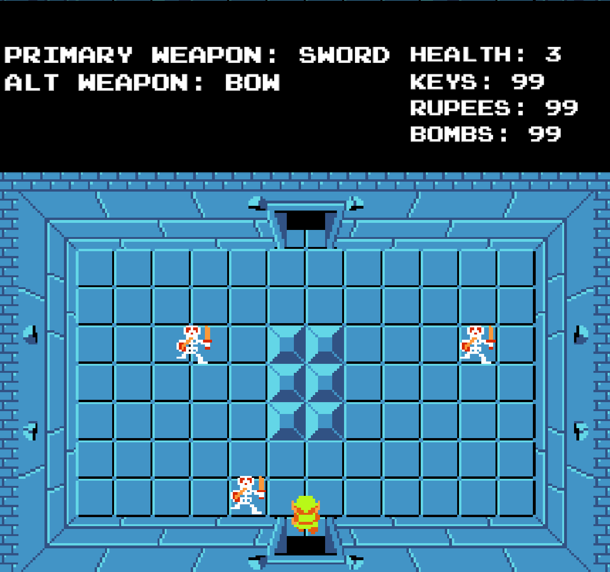
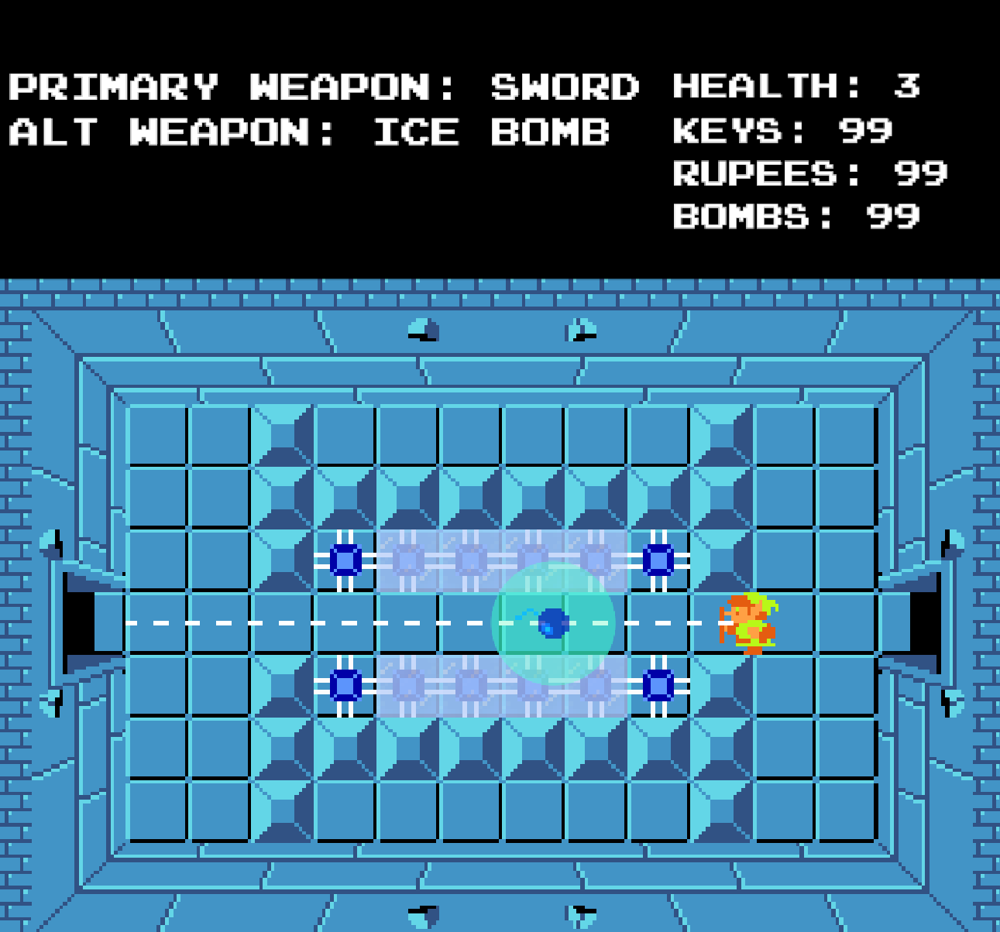
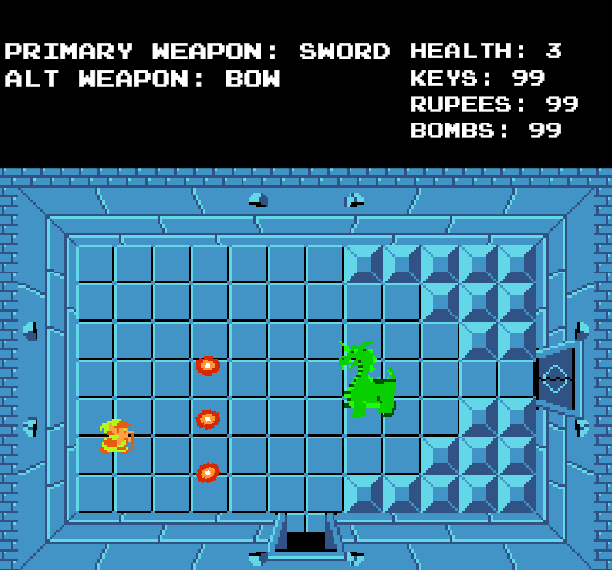

The Legend of Zelda (Unity Remaster)
  This project is a recreation of the first dungeon in the 1986 The Legend of Zelda game but with a custom mechanic, an ice bomb! The player can play through a near perfect replica of the original game, or can press 4 and play our custom level, where we introduce the ice bomb and it's functionality!
We used Unity and C# to develop this game and used Jira and Github to collaborate and track our progress. Some key tasks I completely during this project was the door transitions, a staple of the original game, Gel enemy movement, item collections, and alt-weapon switching.
If you're interested in playing my game you can check it out and download it here: Zelda